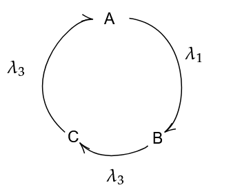

Say the quantity of \(A\) at some time \(t\) is \(N_A\), and similarly for \(B\) and \(C\).
We can frame the following system of differential equations:
\[\frac{d N_A}{dt} = \lambda_3N_C - \lambda_1N_A\]
\[\frac{d N_B}{dt} = \lambda_1N_A - \lambda_2N_B\]
\[\frac{d N_C}{dt} = \lambda_2N_B - \lambda_3N_C\]
Now, we have to solve these equations.
Note that if we add all three equations, we get:
\[\dot{N}_A + \dot{N}_B + \dot{N}_C = 0\]
\[\implies N_A + N_B + N_C = \text{constant} \overset{\text{def}}{=} n\]
This basically says that if we add up the number of nuclei of all three substances at any time, it must be the same, i.e. it is constant. This means,
\[A_0 + B_0 + C_0 = n\]
\[\implies N_C = n - (N_A + N_B)\]
Substituting this is our first equation, we get
\[\frac{d N_A}{dt} = \lambda_3n - (\lambda_3 + \lambda_1)N_A - \lambda_3N_B\]
Differentiating this with respect to time,
\[\ddot{N}_A = -(\lambda_3 + \lambda_1) \dot{N}_A - \lambda_3 \dot{N}_B\]
We can then substitute the second equation into this to get a linear second order differential equation in \(N_A\).
\[\ddot{N}_A + \alpha \dot{N}_A + \beta N_A = \lambda_2 \lambda_3 n\]
Where,
\[\alpha = \lambda_1 + \lambda_2 + \lambda_3\]
\[\beta = \lambda_1\lambda_2 + \lambda_2\lambda_3 + \lambda_3\lambda_1\]
We can rearrange the equation as so,
\[\ddot{N}_A + \alpha \dot{N}_A + \beta \left( N_A - {\lambda_2 \lambda_3 \over \beta }n \right) = 0\]
We now define,
\[X_A = \left( N_A - {\lambda_2 \lambda_3 \over \beta }n \right)\]
We do this in order to remove the constant. Also,
\[E_A \overset{\text{def}}{=} {\lambda_2\lambda_3 \over \beta } n\]
And similarly for \(E_B\) and \(E_C\). These are the equilibrium values for the nuclei, i.e. their final quantities at time \(t = \infty\).
Hence, our equation becomes,
\[\ddot{X}_A + \alpha \dot{X}_A + \beta X_A = 0\]
The solution for this is known as
\[X_A = c_1e^{\tau_1t} + c_2 e^{\tau_2t}\]
Where \(\tau_1\), \(\tau_2\) are defined as
\[\tau_1,\tau_2 = \frac{-\alpha \pm \sqrt{\alpha^2 - 4\beta}}{2}\]
We can solve for \(c_1\) and \(c_2\) by substituting appropriate initial conditions.
The solution is given in this desmos plot, with a little extra terms, since desmos can’t directly register the imaginary constant in the function, and hence we must split it into 3 parts: Underdamped, Critically damped and overdamped cases. Note that they are slightly different, but this change is only due to the fact that \[\alpha^2-4\beta\] may be positive or negative, giving imaginary numbers. Note that regardless of it being imaginary, the final function as a whole is always real.
Plot: